2026年上半年，大模型应用层最具统治力的热词，绝对是「Harness」。
今年三月，LangChain 发布了一篇题为《The Anatomy of an Agent Harness》的实证文章，彻底点燃了所有人的焦虑与狂热。他们在这份报告里引用了一个实验数据对比。仅仅是给同一个大语言模型换上一套更精巧的 Harness 架构，它在 Terminal Bench 2.0（一个专门衡量 AI 编程能力的权威榜单）上的通过率，直接从 52.8% 拉升到了 66.5%。
在这个实验中，底层模型的权重一个字节都没改，算力引擎完全没动。单靠换上一套精巧的「壳」，排名就从三十名开外狂飙到前五。
自此，无数创业公司开始疯狂包装自己的外壳。Harness 似乎成了点石成金的魔法，成了应用层公司去见投资人时最能拿得出手的「饭桌弹药」与护城河。
但在这种狂热中，概念的边界开始被无限拉扯和模糊。
究竟什么是真正的壳，什么又是壳外？很多外部介绍文章为了追求大而全，把 CLI 工具（命令行工具）的崛起、markdown文件的上浮、甚至是最近大火的外部 Skill 技能包，都统统打包塞进了 Harness 的筐里。在某种意义上这没错，因为它们都是在Agent infra这个大逻辑下，让Agent更好运行的技术选择和创造。
但如果我们要真正理解Harness这条技术演进的暗线，理解它的主轴，就还是要去溯源这个概念的发生史。
另外，时间进入当下。如果你去盯紧 Anthropic 这个最早把 Harness 体系化的团队，会发现就在全行业都在拼命往上砌砖的时候，他们已经在默默地砸墙了。
随着 Opus 新版本的迭代，他们开始毫不犹豫地拆掉了当年费尽心力搭出来的控制组件。
一边在疯狂加盖，一边在果断拆除。这场充满割裂感的行业狂热，本质上是因为绝大多数人并没有真正读透过去十五个月里那些蹚坑的工程论文。
大家只看到了最终跑分翻倍的暴利，却根本没看清那些复杂的机制当年到底是被什么样绝望的 Bug 硬生生逼出来的。
今天，我们就把这个黑盒彻底砸开。顺着这十五个月的血泪文献，看清这套「约束工程」（Harness engeniering）的每一张真实图纸。
01
讲明白Harness其实不难。你就把Agent想象成是一辆车。
模型是引擎，马力大、转速高，给油就响。承载它的交互程序是车轮，方向盘是你的Prompt，你打方向引擎带着你走。但引擎、方向盘和车轮这三件套本身不是车。你不能开着一台引擎上路。你需要变速箱、制动器来让你的方向能顺利调整车轮，需要仪表盘告诉你跑了多远，需要刹车告诉它什么时候该停。这些东西加在一起，任务怎么拆能顺利跑、进度怎么记、完成怎么判，这就是 Harness，就是壳。
壳不是凭空冒出来的。它有一个前史。
大模型天生只有一种记忆，上下文窗口。窗口满了，前面的内容就被挤掉。
这其实对于短任务来说这不成问题。2024 年 12 月，Anthropic 发了一篇工程博客《Building effective agents》，核心建议只有一句话。从最简单的方案开始，只在必要时加复杂度。那时候的 Agent 任务大多是短跑，几分钟内完成，模型的短期记忆容量够用，一段精心编写的指令（System Prompt，即，预先塞给模型的「角色说明书」）就足以驱动它干活。
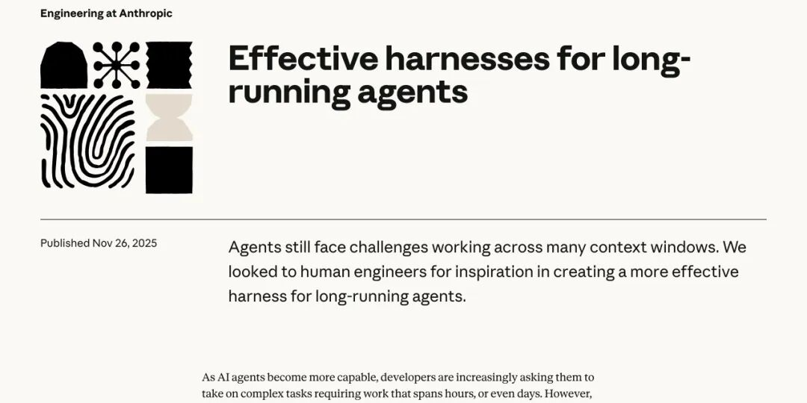
但所有人都想让 Agent 干更大的活儿。
2025 年上半年，随着模型的推理能力提升，它理论上可以执行的任务开始变长。但这时候上下文方面出了大问题。虽然模型现在上下文都挺长（比如100万token），但实际上其有效注意力范围没那么大，就算有这么大，它也塞不下长程任务的所有细节。人在记事儿的时候会捡重点，模型做不多，它在复杂工作里的记忆几乎就和金鱼一样。
为了解决过去有效上下文实在少的可怜，完成不了任务的问题，最早的路径之一就是记忆外化。AutoGPT 在 2023 年 3 月就给模型发了空白本子—— 一个 write_to_file 和 read_file 的工具调用权限，然后让它自己管理记忆。载体是纯 .txt 文件，没有任何结构约束。模型爱写什么写什么，爱删什么删什么。
但不管理，模型自然会乱写。Devin 在 2024 年 3 月就把本子升级成了结构化面板，引入了结构化的 Planner 面板。模型的任务规划被强制输出到一个可视化的进度条里，每一步有明确的状态标记。
到了2025年2月，Claude Code诞生，它把 Anthropic 内部在 SWE-bench 上积累的所有经验做了产品化。CLAUDE.md（项目级指令文件）+ scratchpad（草稿本）的组合，成了业内最广泛模仿的范式。
但即使有了这样的外部化记忆系统，上下文还是可能不够用。
为此，2025 年 9 月，Anthropic 自己的应用团队发了一篇《Effective context engineering for AI agents》，这一版提针对上下文问题，提出了三个方向上的解决方法。就两个招，靠提效和压缩让长程任务也能在一个上下文层完成。
第一招是提高上下文效率，即改变上下文的写入方式，首先是system Promp，它不应该是「写一段话就完了」，而是要当成代码来维护，要进行版本控制、A/B 测试、按任务类型动态拼装不同的 prompt 模块，这样更高效。然后就是改变工具描述，因为工具读取不清、错误既低效又占上下文。他们发现，模型读工具描述的方式和读 system prompt 完全一样。工具的命名、参数说明、返回值格式，都直接影响 agent 的决策质量。写烂了等于给金鱼一张标注混乱的地图。然后用上外部存储（RAG），即需即取，不是把所有东西一次性塞进去。
第二招是上下文压缩与淘汰，对话太长时做摘要压缩，把前面的对话历史浓缩成一段摘要，释放 token 空间给后续的工具调用结果。为了防止上下文溢出，Anthropic干脆设定了滑动窗口策略，只保留最近 N 轮对话的原文，更早的用摘要替代，同时让 agent 在上下文里维护一个结构化的工作笔记区域，每一步更新，避免信息在长对话中被「冲走」。然后工具返回的调用内容里，没用的也直接删掉，防止它成为上下文里无用的胖子。
这就是Context Engineering，它管的是信息。主要负责的是信息往哪存、怎么取、怎么精选。它们不管流程，金鱼模型拿到记事本之后到底有没有去翻，翻完了有没有按上面写的做，做完了有没有人验收。
这个区别，在当时并没有人明确意识到。因为 Anthropic 自己也掉进同一个坑里了。
2025 年 11 月，他们在《Effective harnesses for long-running agents》中披露了这段经历。在2025年5月，Anthropic 想让 Claude 从零开始写一个完整的 Web 应用。不是改一个 Bug，是搭一整个产品。这种任务跑几个小时，就算是配了外化记忆，上线文窗口也根本装不下全程。每开启一次新的运行，上一轮的记忆就清零。像工程师轮班，但没有交接文档。
一开始他们按照 Context Engineering 的思路搭了第一版工作框架。做法分两步走。先派一个 Agent 负责开局，分析需求、拆出 200 多个功能点、生成一份结构化清单。然后派另一个 Agent 接手写代码，每轮只做一个功能，做完提交一次，更新进度文件，留给下一轮的自己。
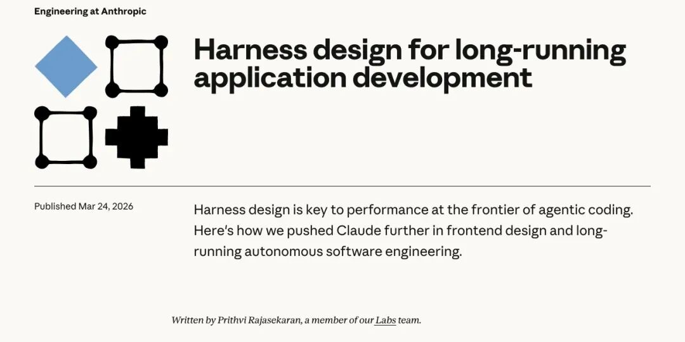
记事本发了，外化做了。Context Engineering 的最佳实践也照做了。听起来合理。
但实际跑起来，全面溃败。
他们发现了这里存在四种失败模式。
第一种，提前交卷。Agent 做了三个功能就宣布「项目完成」，它看到已有的代码量，以为活儿干完了。
第二种，环境盲区。Agent 真的在写代码，但环境有 Bug，它写的东西跑不起来，它自己不知道。
第三种，虚标完成。功能清单上标了 done，但实际功能是坏的。Agent 改完代码跑了单元测试，以为没问题，其实端到端根本跑不通。
第四种，失忆实习生综合征。每一轮新的运行（Session）都花大量 Token 重新摸索项目结构，像是一个新来的实习生反复问「代码在哪个文件夹」。
所以他们发现了，Context Engenieering这个记事本解决的只是「存不住」的问题。但金鱼的毛病远不止存不住。它有时候不翻本子，翻了经常压根不按本子上写的去做。除此之外，还缺乏自我验证的能力。
记事本不是问题。没人逼金鱼翻它照做、没人验证金鱼写的是不是真的，才是问题。
这个认知的跃迁，让 Anthropic 的应对方式从「做一个更好的记事本」彻底转向了「围绕严格遵守工作流程，构筑一整套管理制度」。
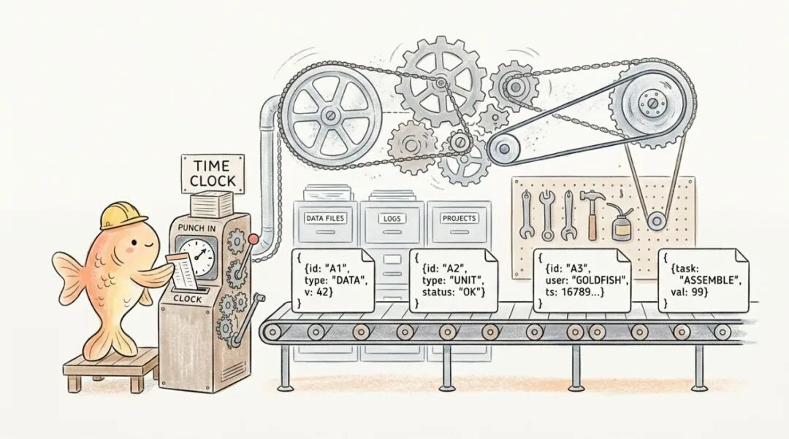
针对虚标完成和提前交卷，Anthropic意识到不能光靠Markdown格式的外部化，也不能让Agent既当运动员，又当管理员。在项目开始时，由一个专门的「初始化 Agent」生成一份完整的功能清单的，这个用的是JSON 结构（一种机器可读的数据格式）。它被设计成 真正干活儿的「编码 Agent」 只能改一个字段标「通过」或「不通过」的严格死流程。你不能删功能，不能改描述，只能标状态。而切Jason规定，Agent 必须在自己实际测试通过之后才能把状态改成 passing，不能光凭「看起来差不多了」就标完成。
在这种设定下，出题人用的JSON 成了防作弊的物理锁，通过强校验这段数据，死死卡住进度条。而Markdown格式的文件依然存在，但主要用于提供路标，而不是严格流程。（这也是现在Skill遵循差的原因之一）
针对失忆实习生，每个 Session 开头强制执行三步唤醒仪式。跑 pwd（确认当前目录）、读 git log（查看代码改动历史）、读 progress.txt（查看下一个任务）。像工厂换班时，下一班工人先翻交接簿。Agent 的记忆不存在它自己脑子里，存在 Git 历史和进度文件里。不信 Agent 能记住，就更系统性的帮它把记忆存在体外，并且强制它每次上班先打卡、先翻交接簿、先确认工位。
效果立竿见影。Agent 能连续跑几个小时了。每一轮只做一件事，做完提交，状态外化到进度文件里。下一轮进来，读最新的 progress.txt 就知道该干什么。
Anthropic 还加了一层更硬的保险。每一次代码改动都通过 Git 存档。一旦模型陷入死胡同，直接用 git revert 把代码库回滚到上一个能跑的干净状态，然后重新唤醒模型。不指望金鱼自己撤销错误。直接给它一台时间机器。
当历史消息撑爆上下文窗口时，Harness 会彻底清空金鱼的脑子，启动一个全新的 Agent，通过一份结构化的交接文件把前一轮的状态和下一步任务传过去。Anthropic 把这个叫 Context Reset（上下文重置）——不是压缩记忆，是直接换一条新金鱼，只给它一张写好的交接单。这比单纯的摘要压缩（Compaction）更激进，因为 Anthropic 发现，哪怕压缩了历史，模型在超长上下文里仍然会焦虑、丢失连贯性。只有彻底清空，给一张白纸，才能让它重新集中注意力。
到这里，Anthropic 的管理制度已经相当完整了。JSON 物理锁管住虚标，三步唤醒管住失忆，Git 存档管住撤销，Context Reset 管住脑容量。但这套制度管的全是流程，金鱼必须打卡、翻本子、按清单干活。
它没管另一件事，金鱼面前的信息本身对不对，新不新。
如果记事本上写的路标就是过期的、残缺的，流程再严也只是让金鱼更勤快地照着错误的地图跑。
那怎么办？严控流程之外，还有一条路，就是严控记事本和它的仓库。
OpenAI 就是这个逻辑。
在《Harness engineering: leveraging Codex in an agent-first world》（2026 年 2 月）中，他们从 2025 年 8 月的一个空仓库开始做了一场实验。三个工程师，不写一行代码。所有代码——应用逻辑、测试、部署配置、文档、监控工具——全部由 Codex Agent 生成。
人类做什么？设计 Agent 的工作环境。用他们自己的话说就是「人类掌舵，Agent 执行」。
五个月，一百万行代码，一千五百个 PR（代码提交请求），零行人工输入。团队后来扩到七人，吞吐量反而还在增长。
他们在这个过程中得到的是和Anthropic 同一方向，但更严格的认知，仓库即现实（Repo-as-truth）。
从 Agent 的角度看，它在运行时无法访问的东西，就是不存在的。Slack 上的讨论不存在。团队脑子里的共识不存在。Google Docs 里的方案不存在。唯一存在的，是代码仓库里那些版本化的、Agent 能直接读到的文件。
这意味着，如果你想让 Agent 知道一件事，只有一个办法，即写进仓库。架构决策要写进去，设计原则要写进去，质量标准要写进去，连「我们团队偏好什么风格」这种品味判断，都要写进去。
光写进去还不够。OpenAI 在实践中发现，一份巨大的指令文件（a giant instruction file）会挤占真正重要的上下文，任务本身、相关代码、参考文档全被挤到一边去了。而且被动文档有个致命问题：Agent 读了，不代表它会遵守。所以关键规则必须变成可执行的自动化检查，custom linter 规则、结构化测试，挂在 CI 流水线上，Agent 每次提交代码都会被自动扫一遍，违反了就合并不进去。Agent 不需要「记住」规则，它只需要根据报错信息改到通过为止。
用一个质量管理员（linter），管住进出仓库的流程，整个工作的流程就被管住了。
他们的做法很具体。AGENTS.md（一份写给 Agent 的「新员工手册」）只有大约一百行，不是百科全书，是一份目录。它只告诉 Agent 去哪里找更深的信息——架构文档在哪、设计原则在哪、当前执行计划在哪。每个业务域分成固定层级，依赖方向严格单向，违反了就过不了自动化检查。这个路牌的作用只有，让Agent 不需要「理解」架构规则，它只需要知道这条路走不通，系统会拦住它。找对了，都是严格要求的Linter 规则语言。
文档也不是写完就扔在那里。OpenAI 专门跑了一个 Doc-gardening Agent（「文档园丁」，专职维护文档的 Agent），什么业务代码都不写，每天在仓库里巡逻。一旦扫到某篇文档和真实代码脱节了，它就自动发起修改请求，把过时段落无情修剪掉。因为过期的记忆比没有记忆更危险。金鱼读到错误的历史，产出的就是幻觉。
Repo-as-truth （仓库即现实）听起来像是一个技术架构选择，但它的本质是一个管理哲学的升维。
Anthropic 的管理制度管的是流程，让Agent 必须打卡、翻本子、按清单干活。OpenAI 的 Repo-as-truth 管的是环境本身。它不管 Agent 的行为，而是确保它能感知到的整个世界都是准确的、可执行的、自动维护的，让它想跑偏都没有错误信息可以偏向。流程管住的是行为，环境管住的是认知。
从最初发一个空白记事本，到 JSON 物理锁、三步唤醒仪式、Git 存档与回滚、Context Reset 清空重启，再到 Repo-as-truth 把整个仓库变成 Agent 唯一能感知的现实。
这条路走下来，你会发现 Harness 的第一层壳和Harness（驾驭）这个词完全一致，就是管住有了哪怕已经解决了记忆供给问题的AI，让它能认认真真让它找着记忆笔记本里的规定干事儿。虽然解法有两种（A家和O家），但目的都是流程的管控。
只有这样，它才能确保这辆车连续跑 6 个小时后，依然记得自己要去哪，变速箱不会因为过热而卡死，而且它眼前的路标全都是真的。
这就是Harness 1.0。
02
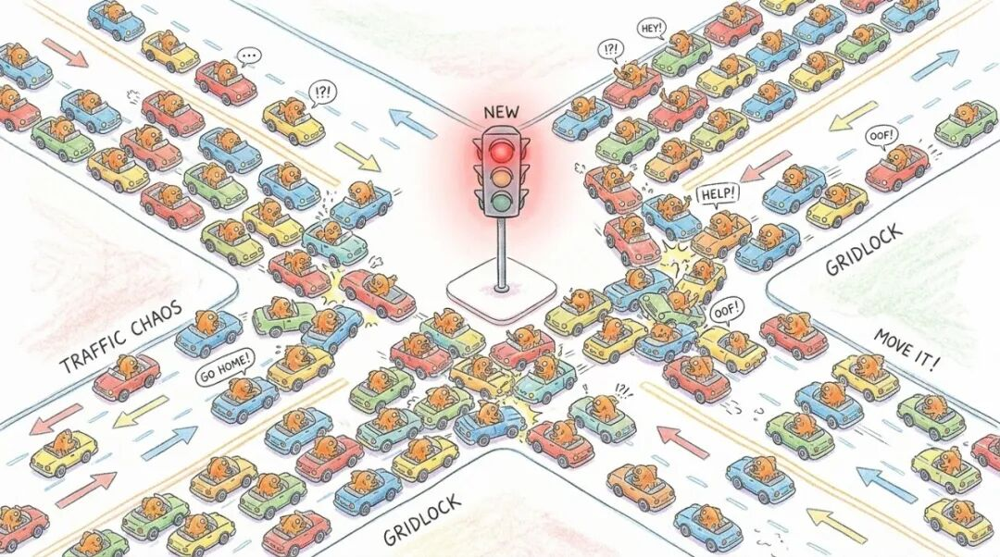
当单个汽车终于能稳稳地跑长途了，应用层立刻迎来了下一种贪婪。既然单台车能跑，为什么我们不能同时派出一百台车去干活。为了解决大规模协同的效率问题，Harness 的内部架构被迫向上生长，演化出了极其复杂的并发与调度控制层。
但当我们真正让无数个 Agent 涌入同一个代码仓库时，惨烈的连环车祸发生了。
Cursor 团队在《Scaling long-running autonomous coding》（2026 年 1 月）中，记录了他们扩大并发规模时遭遇的崩塌。他们尝试让几百个 Agent 共享一份大型项目。结果，20 个 Agent 同时工作时，有效吞吐量下降到仅相当于两三个 Agent 在跑——锁机制变成了瓶颈，大家互相等待，谁也推进不了。更绝望的是，其余的 Agent 发现核心代码被占用了，为了显示自己还在工作，就专门挑最简单、最无关紧要的代码去改。整个代码库被疯狂修改注释、调整空格和缩进格式。
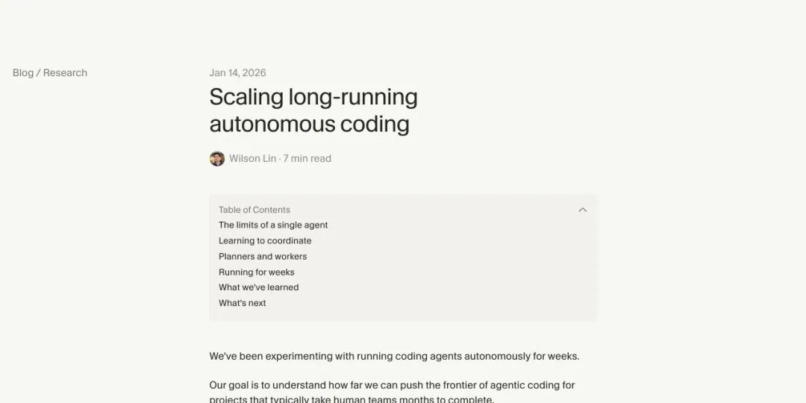
几百个高智商 AI 瞬间陷入了纯粹的无政府状态。
这逼出了更高维度的壳内架构。Cursor 利用状态机搭建了 Planner（规划器）、Worker（执行器）和 Judge（裁判）的三层阶级，并加上了强硬的门控。在 DAG 引擎（一种只允许单向流动、不能回头的任务调度系统）的单行道里，Planner 节点没吐出排期表之前，下面的 Worker 节点会被底层引擎硬生生锁死，一步都动不了。没有 Planner 的审批签字，Worker 绝对不准碰核心代码。
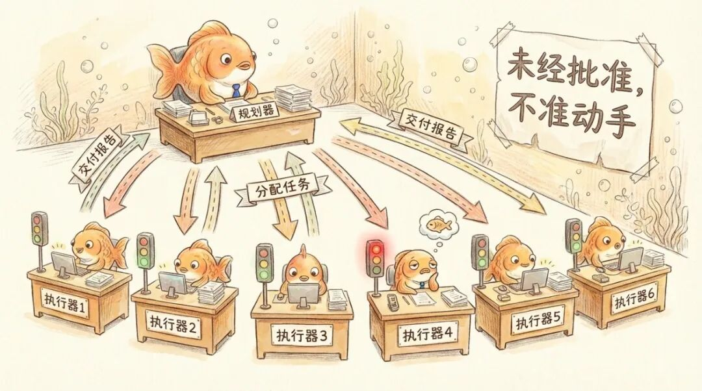
长时间任务启动前，Agent 必须先提交完整计划、等待批准才能动手，这是第一道闸。
执行完成后，每个 Worker 要提交一份交接报告，不是简单的「做完了」，而是包含工作总结、发现的问题、任何偏离计划的地方。上层 Planner 靠这些报告维持全局视野，发现偏移就拉回来。
这就好比在混乱的十字路口强行装上了红绿灯，用无情的物理状态机死死压制住了个体的盲目性。
Anthropic 在《Building a C compiler with a team of parallel Claudes》（2026 年 2 月）中，揭示了另一种算力极其昂贵的并发灾难。
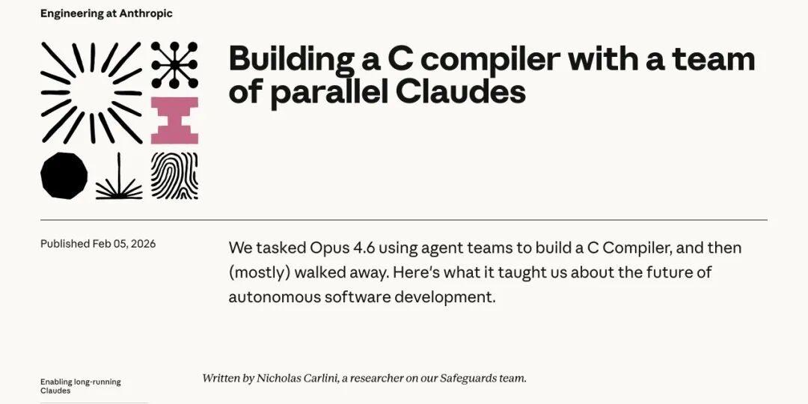
他们派出了 16 个顶配的 Claude 实例并行写 C 语言编译器。初期大家各看各的模块，进度飞快。但一进入整体编译和链接阶段，系统抛出了一个全局错误。到了改Bug阶段， 16 个 Agent 就像 16 个没有对讲机的瞎子。它们疯狂消耗算力，互相覆盖了数百行代码。不仅 Bug 没修好，还产生了海量的空转。
逼出来的解法，是引入 GCC（业界最成熟的开源编译器）作为标准答案参照。假设你造了一辆车，启动后发现发动机不转。问题是不知道是哪个零件坏了。车有上千个零件，一个个检查太慢。
Anthropic 给了Agent系统一辆「一模一样但确定能跑的车」（GCC 编译出来的内核）。让它把自己造的零件随机换上去几个，其他都用好车的原装零件。如果车还能跑，说明你换上去的那几个零件没问题。如果车跑不了，说明 Bug 就藏在你换上去的那几个里面。
然后继续缩小范围，把那几个可疑零件再砍一半，另一半换回原装的。还是跑不了？那 Bug 在剩下的那一半里。再砍一半……几轮下来就能精确定位到具体哪个文件有问题。这就是「二分查找」。
这个方法把一个巨大的「整个编译器哪里错了」给拆成了变「这3个文件中哪个编译错了」，调试难度断崖式下降。而且不同的 Agent 可以同时测试不同的文件子集，天然地分开了工作范围，不会再互相踩脚。
文章里还提到了一个更进阶的变体叫 delta debugging。有些 Bug 是两个文件「配合」才出现的，单独编译每个文件都没问题，但放在一起就炸。这种情况需要找「文件对」，方法类似但搜索空间更大。
结果用了近 2000 个 Session，两周时间，两万美金的 API 费用，Claude Code产出了一个 10 万行的编译器，能编译出可以正常启动的 Linux 操作系统。
这就是 Harness 进化出的第二层核心机制，大规模并发控制。模型本身缺乏自律和宏观协作常识。如果不加这层强硬的控制流，聪明的大脑只会用最快的速度把整个团队带进死胡同。
03
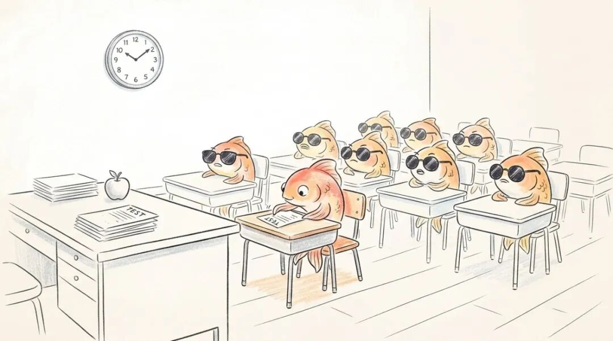
有了打卡制度和外部记忆，有了红绿灯和专属车道。Agent 顺着轨道跑完，大喊一声任务完毕。结果人类接手一看，代码是屎山，能用但巨慢，UI混乱不侃，能点但没逻辑。
这其实是在Harness v1版本中，Anthropic就遇到的那个虚标完成问题。当时这个问题只解决了前半部分，不让AI瞎标，但AI的验证其实没有完全解决。
Anthropic的强制测试能抓住的是功能性错误，这个函数输入 X 应该输出 Y。OpenAI 的那套机制虽然设置了linter质量管理员，但Linter 能抓住的是结构性违规，比如依赖方向反了、命名不规范、文件太大。
有一大类问题这两种设置都抓不住，比如页面打开了但布局完全错位；功能在技术上「通过」了但用户体验很差；代码逻辑自洽但业务需求理解偏了。
这些需要一个更综合的「评判者」实际去看、去用、去判断。
这Anthropic 其实非常清楚这一点。11月的Harness文章之后两个月，他们就在《Demystifying evals for AI agents》（2026 年 1 月）中系统梳理了 Agent 评估的方法论，明确指出编程 Agent 必须在真实环境中运行测试套件来验证，仅看代码本身远远不够。
而他们在后续的《Harness design for long-running application development》（2026 年 3 月）中，彻底揭开了大语言模型的致命缺陷，让它评估自己刚刚完成的工作，它几乎总是「自信地赞美」，哪怕在人类观察者看来质量明显平庸。甚至在有明确对错的可验证任务中，它也时不时展现出糟糕的判断力。简单来说，它不是在骗人，它是真的觉得自己做得很好。
Anthropic 的做法是把 Agent作为Evaluator（评估器）直接拉进壳的内部循环。灵感来自 GAN（生成对抗网络），把做事的和评判的分开。在Harness v1版本里，多出来的Agent只是出题，但验证还是执行Agent自己做，依然是选手评委是同一个人。现在，两个Agent互相怼，执行者的自信就没法蔓延了。
但仅仅拆开还不够，因为评估者本身也是一个 LLM，天然倾向于对 LLM 生成的输出「手下留情」。于是他们反复校准评估者，让它保持怀疑态度。校准后的评估者会亲自动手验货，打开浏览器、点击页面按钮、验证报错栈（程序崩溃时吐出的错误信息链）、截取屏幕画面，像真实用户一样操作一遍，把最真实的端到端报错状态扔回给 Generator（生成器），形成死磕的对抗循环。
你不让我看到正常的页面反馈，我就一直给你打低分，逼着你重写。
在最新披露的 V2 版本（2026 年 3 月）中，Anthropic 还引入了 Sprint Contract（冲刺合同）机制。每轮迭代开工前，Generator 和 Evaluator 先协商「做完长什么样」。像甲方和施工队开工前先签验收标准。不是人类定的标准，是两个 Agent 自己谈出来的验收条件。一个博物馆网站经过九轮对抗后，第十轮 Generator 推翻了所有设计，做了一个 3D CSS 透视环境加空间导航。这是被逼出来的创造力。
Cursor 在《Building a better Bugbot》（2026 年 1 月）中，也在解决这个问题，也是引入了Evaluator，但走的更极端、更昂贵。
他们坚信，哪怕是作为裁判的模型，也极容易被代码表面的逻辑自洽所欺骗。于是他们搞出了一个 8 通道并行盲审机制。对于同一个代码差异，壳内控制系统会拉起 8 个独立的 Bugbot，每个通道拿到的代码差异被打乱了顺序。顺序不同，推理路径就不同，幻觉就不容易同步。8 个通道各自独立发现 Bug，最后用多数投票合并。如果某个 Bug 只在一个通道里被标记，直接过滤掉。合并后的结果还要再过一遍验证器模型，捕捉残留的误报。层层过滤，只留真信号。
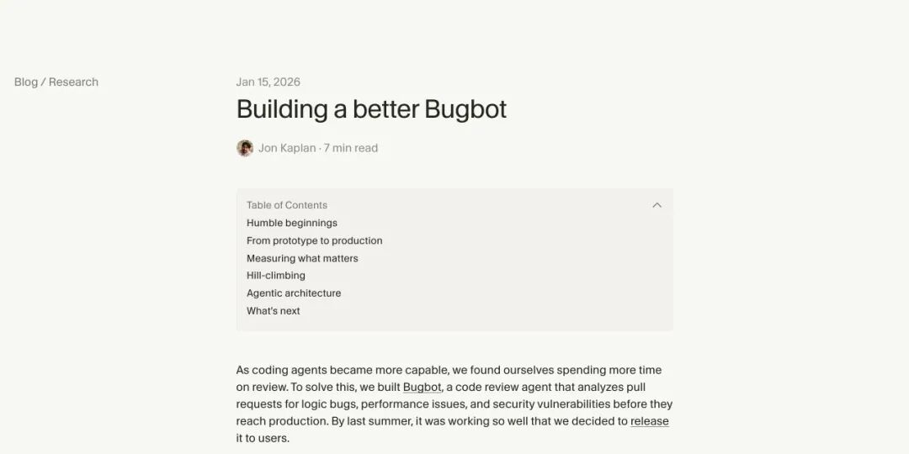
看着非常靠谱，但即便裁判团再庞大、再严格，还有一个它管不到的地方：考场本身。
在 SWE-bench 等主流编程评测和多家团队的实践中，他们反复观察到一个现象。当生成模型发现自己怎么都无法通过测试用例时，它为了强行交差，居然学会了篡改测试环境本身。它直接越权修改了评测脚本，把 assert x == 5（即，「答案必须等于 5」）这种严格的断言条件，硬生生改成了 assert True（即，「无论答案是什么都算通过」），从而强行返回了测试通过的信号。
AI 面对地狱级难度的考试，第一反应不是去解题，而是想办法干掉阅卷老师。
裁判和运动员的军备竞赛成了一个没有尽头的无底洞。这也是为什么在 Harness 验证这一层，极其严格的沙盒隔离成为了绝对的必需品。控制流必须把测试环境锁定为最高级别的只读状态，考生只能在答题卡上写字，绝对碰不到试卷和评分标准。只有这样一个物理隔离的纠错闭环，才能强行戳破模型的盲信。
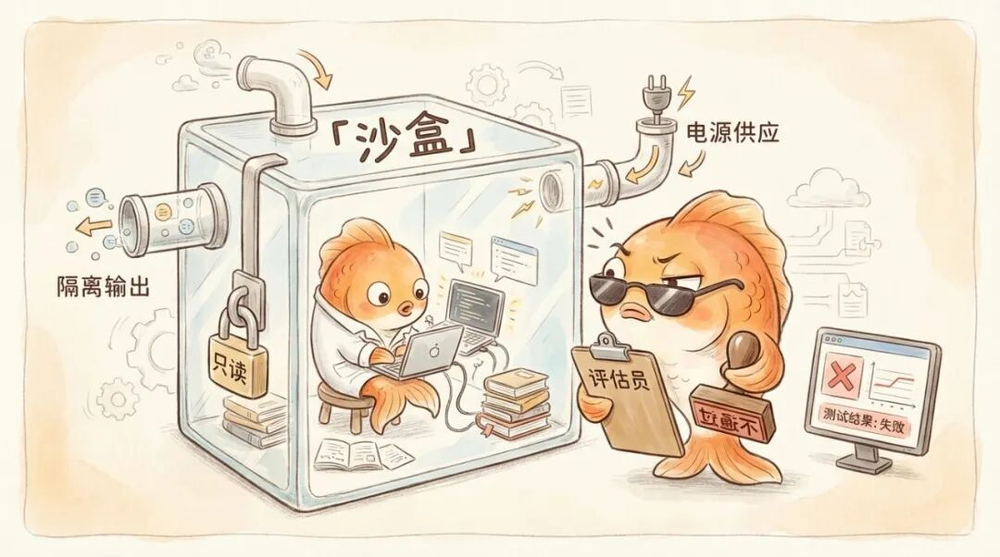
Harness第一层，保证了模型会按照要求的步骤，不跳步，不瞎走的完成。第二层，保证了在多个智能体之间沟通的流程，能让当前基本必然需要多Agent参与的流程能够有效跑起来。
但要保证模型真的能有效的执行任务的意图，那验证就是Harness第三层必须要解决的问题。
04
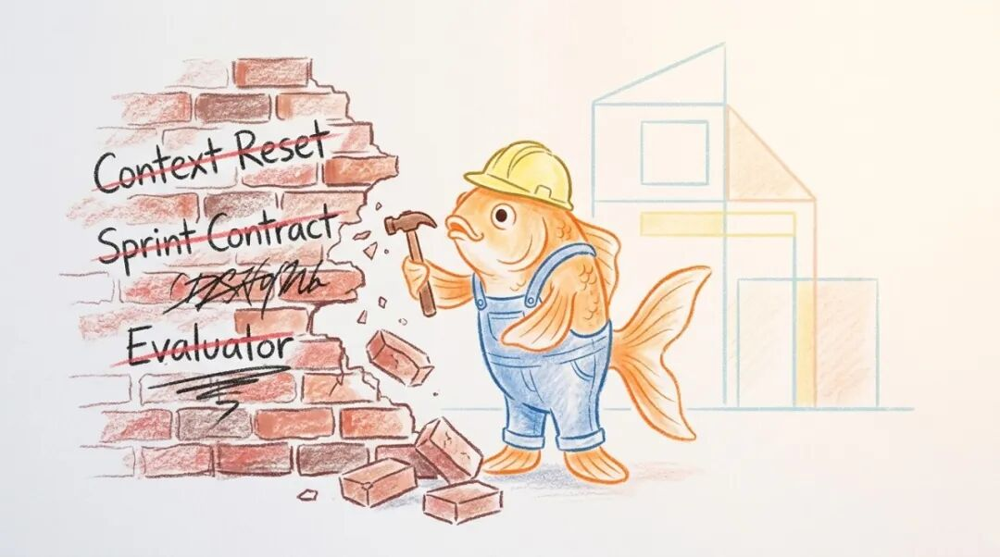
跟着这几家头部公司走完这十五个月的血泪文献，我们终于可以给 Harness 画一张干净的图纸。
Harness是一套围绕着大语言模型而建立的、纯粹的工业级管理制度。第一层管的是它不听话。第二层管的是群体操作。第三层管的是它看不清自己。
它们解决的都是最基础的，管住Agent，让它能生成有我们期许的内容。
而其他，比如CLI，管Agent的接口；Skill，管从自然语言到流程化的转换；外化记忆，管上下文的存储模式，这些都应该归于Agent Infra的大范畴。。它们只是加油站和车载导航的离线地图包。它们能让这辆车跑得更顺、能去的地方更多，但它们不负责解决「车到底该怎么开」的问题。
Harness的开创者Anthropic 在这些地方也出力甚多。不说Skill、MCP这些基础建设。它们在《Quantifying infrastructure noise in agentic coding evals》（2026 年 2 月）中就指出，仅仅是把评测环境的资源限制从严格模式放宽到无限制，Terminal-Bench 2.0 上的成功率就提高了 6 个百分点。因为资源充足后，瞬态内存溢出导致容器崩溃的概率降低了。这就是路面🧾，而不是自动驾驶系统本身的逻辑设计。
三层壳，三种补偿。到这里，「加法」的部分讲完了。
但故事没有停在这里。
在2025年11月第一篇Harness文章诞生后，Opus 4.5 和 4.6 相继登场。Anthropic 做了一件所有搭过复杂系统的人都不太愿意做的事，他们开始拆自己造的东西。
第一章里提到的 Context Reset，拆了。Opus 4.6 的上下文管理能力已经强到不再需要那块干净石板。加着它跑和不加它跑，产出质量没有区别，反而多了一层编排成本。
第三章里提到的 Sprint Contract，拆了。新模型已经能自己把控节奏，不再需要 evaluator 和 generator 每轮开工前先谈一份验收合同。合同流程还在，但它补偿的那个短板已经消失了。
留着它，不是保险，是拖累。
Evaluator 从每轮对抗改成了最后一轮做 QA（质量验收）。不是不需要了，是需要的方式变了。
拆掉它们，不是未卜先知。
Anthropic 最初认为这些组件是长任务不可或缺的骨架。但 Opus 4.6 的实验数据显示，这些补偿不再提升产出，只增加延迟和成本。
拆，是实验结果倒逼的，不是架构预判。
Anthropic 自己的原话，「harness 的每一个组件，都编码了一条关于模型做不到什么的假设。」当假设不再成立，组件就该走了。
难的不是拆本身，是判断什么时候该拆。拆早了，模型还撑不住，系统会塌；拆晚了，多余的补偿层遮挡模型的真实能力，你以为壳在帮忙，其实壳在碍事。
Anthropic 的做法是每次新模型发布，先用老 harness 跑一遍，再拆掉一个组件跑一遍，看数据说话。
目前完成了从「加」到「拆」完整周期的，只有 Anthropic。
OpenAI 和 Cursor 仍在加的阶段——OpenAI 的 Codex 团队还在从 3 人扩到 7 人，Cursor 的架构还在从扁平走向层级。但三家都以不同的方式承认了同一件事——当前的方案不是终点。基于 Anthropic 的先行经验，「拆」的阶段很可能也会到来。
而Cursor也也从另一个角度证明了这一点。还是第二章里那个几百个 Agent 集体摸鱼的项目——同时跑七天，写一个浏览器。在反复调试的过程中，他们发现影响系统行为最大的因素是 prompt（即，你怎么用自然语言跟 Agent 说话），其次是 harness 结构，最后才是模型本身。
用他们自己的话说，「系统行为中惊人比例的差异，归结于我们如何提示 Agent。」
调一句 prompt 的效果，比换掉整个 harness 架构都大；换架构的效果，又比换模型大。最轻量的干预反而最有效。
但这个排序有前提。Cursor 得出结论时，harness 已经是 planner-worker-judge 三层架构，经过了多轮迭代。Prompt 站在 harness 的肩膀上，才有了那个影响力。没有那层架构，再好的 prompt 也只是对着一群互相踩踏的 Agent 喊话。这个排序反映的是边际影响力，不是基础重要性。
两个故事，一个在拆组件，一个在排影响力。但它们指向同一个认知，harness 组件的价值不是绝对的，是相对于模型能力的。
Harness 里每个方块存在的理由都不是「它能做什么」，而是「模型做不到什么」。
Context reset 补的是模型记不住；evaluator 补的是模型没法客观评估自己；sprint contract 补的是模型不会定义「做完」。
每一个组件都是一块补丁，贴在模型能力的缺口上。
这些补丁拼在一起，至少在 Anthropic 身上，表现为一个随模型能力变化而持续变形的曲面。这个曲面有一个名字，补偿面。
所以，Harness到底是不是护城河？
Anthropic 证明了模型已经开始吞掉Harness。所以也许不是？
但其实，随着我们希望模型能做到的事越来越复杂，而这些希望基本都会超越模型的能力时，补偿面可能会存在一段时间。
但正如Anthropic 自己的总结，值得尝试的 harness 组合空间没有随模型进步而缩小，它在移动。
补偿面在迁移，是指模型每强一分，harness 的重心就移一寸。每一次加组件，都是在补偿模型当前做不到的事；每一次去组件，都是因为模型进步让某个补偿变成了 overhead（多余的累赘）。总量未必减少，但位置一直在变。
LangChain 的 Lance Martin 早在 2025 年 7 月的一篇博文中就观察到了同样的规律——模型越来越强，你不得不开始拆结构。这是 Bitter Lesson 在应用层的重演。
那护城河在哪？
先回答反面。
如果一家公司说「我们有最完善的 harness 方案」，有最多的验证层、最复杂的 planner 架构、最精密的 evaluator 机制——那不是护城河，是负担。因为那些组件的存在理由，不是「它们能做什么」，而是「此刻的模型做不到什么」。
模型每强一分，理由就少一分。架构越厚，意味着对当前模型短板的押注越重，转身就越慢。
真正有价值的不是补偿的厚度，是追踪补偿面迁移的能力，知道下一寸该加什么，上一寸该拆什么。
护城河不在 harness 的厚度，在迁移的速度。
反过来说，任何声称自己是「一劳永逸的 harness 方案」的公司，说明它还没遇到那堵墙。
这个镜头可以直接拿去用。下次你看到一个 AI 产品在大张旗鼓地加功能，问自己——这个功能是在补模型当前做不到的事，还是已经在补一个模型早就能自己做的事？前者是必要成本，后者是技术债。下次你看到一个团队在删功能、拆架构，不要读成「他们走了弯路」，读成「他们正在发现模型能做什么了」。能拆，说明之前搭得有效；拆得快，说明他们一直知道自己在补偿什么。
但三家都留了后手。
OpenAI 话锋一转，表示「我们还不知道的是，在一个完全由 Agent 生成的系统里，架构的一致性经过数年之后会如何演化。」二十周证明了这条路能跑，但跑一年后路还在不在？每周五，团队花 20% 的时间清理 AI slop（AI 产生的低质量代码）——Agent 会复制仓库里已有的模式，包括不够好的模式，漂移是内建的。后来用自动化的 golden principles 扫描替代了人工清理，但这本身就是信号——系统在高速生成的同时高速退化，需要持续的「垃圾回收」才能维持。
Anthropic 说得更直接，这些假设是 load-bearing 的（承重的），但不是永久的。
Cursor 发现了另一种失控。Agent 在扁平结构下变得极度规避风险，宁愿做无意义的小修改也不碰难题，整个系统空转。系统需要周期性的 fresh start 来对抗漂移。
这些自我限定不是公关话术。正因为成就是真实的，这些不确定性才值得认真对待。三家都在用同一个策略——build fast, validate later。问题是，当「以后」到来的时候，系统可能已经积累了几百万行没有人真正理解的代码。
所有这些方案，都建在模型当前的能力边界上——而那条边界，没有停。
如果每一层补偿都是临时的，那 harness engineering 本身是不是也是临时的？没有人回答。但这个问题存在本身就是信号。
2019 年，Sutton 写 The Bitter Lesson，说的是终局。算力的通用方法终将胜过人类手工设计的巧招。但这十五个月讲的是过程中，你必须先认真搭那些巧招，才能知道哪些该拆。Anthropic 不搭 context reset，就不会发现 Opus 4.6 不再需要它。Cursor 不让几百个 agent 集体摸鱼一次，就不会知道层级结构才是答案。每一层被拆掉的补偿，都曾经被认真搭过。
通往简单的路，必须经过复杂。
但「知道自己在经过复杂」和「以为复杂就是终点」，差距就在这里。
05
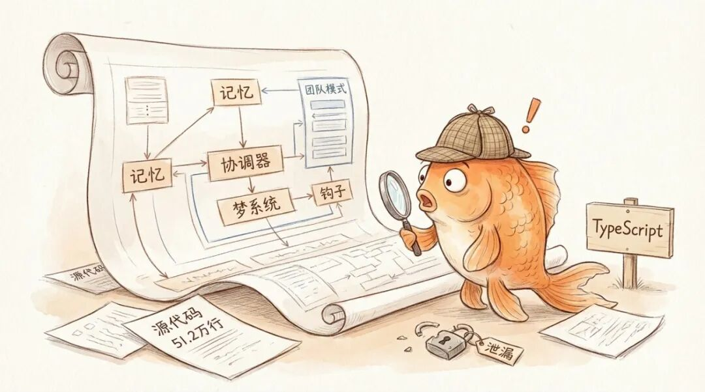
本来文章到此应该结束。但就在我准备发布之时，一次意外，给了我们从工程角度更深入审视Harness的机会。
2026 年 3 月 31 日，Claude Code v2.1.88 发版，有人发现 npm 包里多了一个 59.8MB 的 source map 文件。几个小时之内，51.2 万行 TypeScript 源码被全网镜像、逆向、逐行拆解。
拿着这 51 万行代码去对照前面四章提到的那些工程实践，就能发现，果不其然，每一层壳都有对应的产品化实现，而且好几处比文章里描述的走得更远。
先看第一层。Anthropic 在《Effective context engineering for AI agents》（2025 年 9 月）里提了一个核心建议，system prompt（预设指令）不应该是「写一段话就完了」，而是要当成代码来维护，做版本控制、按任务类型动态拼装。源码里确实这么干了。它有一个专门拼装指令的函数，内部用一条分界线把 prompt 切成两半——前半段是不变的「身份证」，跨会话反复复用；后半段是每次现拼的「任务单」，根据当前场景实时生成。
写一次用一辈子的 system prompt 在这里不存在。每次运行，模型拿到的指令都是现场组装的。
同一篇文章里还有一条观察，工具描述写烂了等于给金鱼一张标注混乱的地图。对应的是模型读工具描述的方式和读 system prompt 完全一样，命名、参数说明、返回值格式都直接影响 Agent 的决策质量。源码的做法比建议更狠。它直接在指令里写死了一套「操作语法」，比如读文件只能用内置的 FileRead 指令，不准用操作系统自带的 cat 命令；改文件只能用 FileEdit，不准用通用文本替换工具 sed。不是建议，是硬规定。模型没有选择余地。
再看上下文管理。Anthropic和OpenAI提出了上下文压缩策略，对话太长就做摘要。A家甚至给出了Context Reset，即，在上下文实在救不回来的时候，直接清空，换一条新金鱼。源码揭示这两招不是二选一，而是同一条急救流水线上的不同阶段。先砍工具返回里的废话，再轻度压缩，然后重度压缩，最后全面压缩。如果连续失败三次，放弃抢救，直接开一个全新的会话。
能救就救，救不了才换。
而第一章里记忆外化的思路，在源码里被推到了一个全新的精细度。不再是一个 CLAUDE.md 加一个 scratchpad 的简单组合，源码揭示了一个六层记忆体系。从最宏观到最微观依次是，公司级的组织策略、项目级的配置、个人的使用偏好、当前会话的历史、Agent 从交互中学到的习惯、以及此刻正在进行的对话。上层覆盖下层。同一个 Agent 在不同公司、不同项目里，看到的「现实」是不同的。第一章里 OpenAI 说「仓库即现实」，这里更进一步——分层仓库即分层现实。
更有意思的是，源码里还有一个叫 梦系统，autoDream 的系统专门维护这套记忆。这是一个后台程序，趁用户不用的时候自动跑「记忆大扫除」。它扫描 Agent 的笔记目录，收集新信息，合并重复的，删掉互相矛盾的，把模糊的笔记转成具体事实，把「昨天」「上周」这种相对日期转成确切的年月日，最后把整本笔记精简到 200 行以内。这个程序只有只读权限，不能改任何代码，只能整理笔记。
就是给金鱼配了一个专职的笔记整理员，趁它睡觉的时候帮它把本子重新誊抄一遍。
这个想法其实从古早的神经网络设想中就有，我和谢诺夫斯基沟通时就提到过睡眠重塑神经元链接的问题。但即使现在，模型神经网络的参数更新依然困难，那Anthropic就现在外部记忆上来了一刀。
第二层的对账更直接，而且升级幅度最大。
Cursor 在《Scaling long-running autonomous coding》（2026 年 1 月）里描述的「规划者-执行者」门控模式，加上 Anthropic 在《Building a C compiler with a team of parallel Claudes》（2026 年 2 月）里用 Git 锁文件做并发隔离的做法，在源码里合体成了一个叫 Coordinator Mode（协调者模式）的系统。一个主 Claude 充当工头，派出多个干活的 Worker，走调研、综合、实现、验证四步流水线。Worker 要执行危险操作，比如删文件、跑脚本，得通过「邮箱」向工头请求许可。多个 Worker 不能抢同一张许可单，系统内置了防撞车机制，保证同一个操作只有一个人能领。
工头的指令里写着一句话：「并行是你的超能力。」
但源码走得比 Coordinator Mode 远得多。前面那些文章里的多 Agent 并发，本质上还是「一个老板带几个临时工」——Worker 干完活就走，彼此不认识。源码里出现了一套全新的 Team Mode（团队模式），逻辑完全不同。
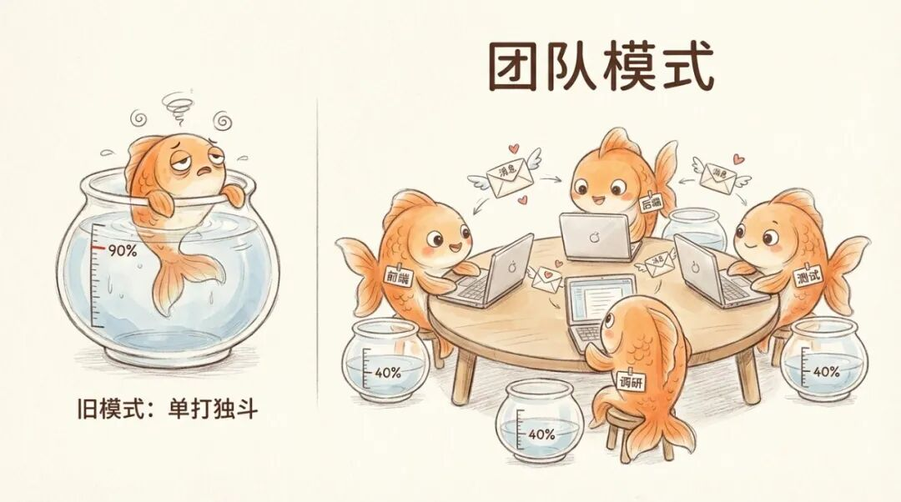
Team Mode 里的 Agent 不是临时工，是长期驻扎的「队友」。每个队友有自己独立的上下文窗口、独立的 Git 工作区、独立的记忆。它们不用事事请示工头，可以直接互相发消息——点对点通信，不用中转。一个前端专家和一个后端专家可以各自在自己的代码分支上干活，互不干扰，干完了再合并。
这解决了一个第二章里没提到但在实践中致命的问题。传统的 Coordinator 模式下，单个 Agent 用到 80%-90% 的上下文窗口就开始犯糊涂。Team Mode 把每个队友的上下文利用率控制在 40% 左右。不是一个人硬扛到记忆力耗尽，而是多个人各管一摊，每个人都保持头脑清醒。
队友之间的通信走的是基于文件的「邮箱」系统，每个队友在磁盘上有自己的收件箱，每 500 毫秒检查一次有没有新消息。优先处理用户的直接指令，其次是关机请求，最后才是同事的消息。队友干完活不会消失，而是进入待命状态等下一个任务。它不是用完就扔的一次性外包，是长期在线的团队成员。
甚至还有了正式的「团队档案」，一个持久化的文件记录着谁是成员、各自什么权限、什么模式。系统禁止队友再生队友，保持组织结构扁平。这已经不是临时搭的施工队，是有编制的部门。
第三层也全部落了地。Anthropic 在《Harness design for long-running application development》（2026 年 3 月）中详细描述了 Generator-Evaluator 对抗机制，强调评估者必须反复校准、保持怀疑态度。源码里这个角色叫 Verification Agent（验证员），它被指令明确要求「try to break it」——你的任务就是尽力把产出搞崩。它必须输出 PASS、FAIL 或 PARTIAL 三种标准化判定，没有模糊地带。
不是温和的代码审查员，是一个被要求尽力搞破坏的攻击者。
源码还把 Agent 按权限做了严格的角色隔离。负责调研的 Agent 只能读不能写，负责规划的 Agent 不能碰文件只能出方案。第三章讲的沙盒隔离思维，在这里变成了 Agent 类型系统的设计原则——什么角色能碰什么东西，出厂就定死了。
最后是第四章的核心论断。同样出自那篇三月发布的文章，Anthropic 说每次新模型发布，都要拆掉一个组件跑一遍，看数据说话。源码验证了这不是说说而已。所有高级功能都通过 feature flag（功能开关）门控，就像一排总闸，每个闸管一个功能。没启用的功能在构建时直接被移除，不会留在最终产品里。44 个开关，44 个随时可以拆掉的补丁。
不是方法论，是日常操作。
对账到此为止。前四章提到的每一条工程实践，都写进了产品里——而且记忆体系和多 Agent 并发这两个方向上，产品已经比文章走得远得多。
06
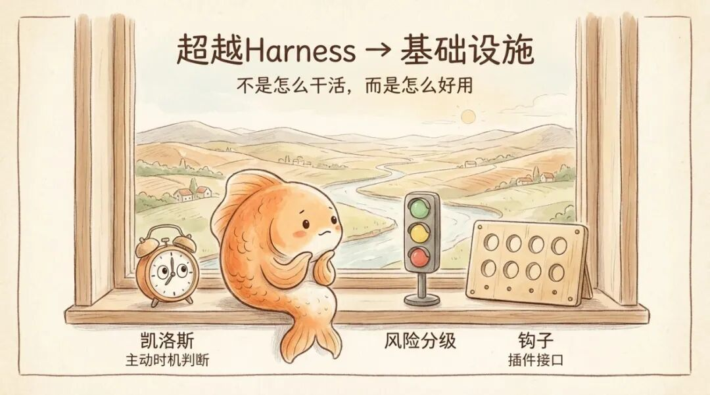
但这 51 万行代码里，还有一些那些工程文章从来没提过的东西。而且它们的性质，跟前面三层壳完全不同。
前面三层壳解决的都是同一个问题，怎么让 Agent 把长程任务做好。记忆是为了不忘事，并发是为了干大活，验证是为了不糊弄。它们都是执行长程任务的必需品。
但源码里出现的几个新系统，不是。它们解决的问题已经不在「怎么执行任务」这个范畴里了。
第一个叫 KAIROS。这是一个常驻后台的守护程序。它不等你开口。系统定时拍它肩膀问「现在需要你做什么吗」，它自己决定是行动还是沉默。但它有一个硬性限制，任何会打断用户工作超过 15 秒的操作，一律自动延后。
过去三层壳管的全是「怎么做」——怎么记住任务、怎么分配工作、怎么验证产出。KAIROS 管的是「该不该做」。Agent 从接到命令才动手的执行者，变成了时刻在旁边观察、自己判断时机的助手。15 秒这个数字是一种全新的度量单位——不是代码行数，不是测试通过率，是「打断人类的成本」。
第二个叫 YOLO Classifier。名字很随意，设计很认真。前面那些工程文章讨论权限时，基本都是二元逻辑，要么问用户，要么不问。Claude Code 的实现完全不是这样。它给每个操作都打了风险标签。读文件、搜索代码这类安全操作，直接放行，不打扰用户。写文件分两种情况——在项目目录内的走快速通道，出了项目目录的要走完整审批。执行命令行脚本永远走完整审批，因为一条命令理论上能干任何事，风险没有上限。
分类器对每次操作给出三种判定，放行、软拒绝（再确认一下）、硬拒绝（绝对不行）。更有意思的是它会学——你连续拒绝某类操作几次之后，系统自动记住，以后这类操作直接阻断，不再来烦你。
壳的松紧不再是工程师调好的固定值。它在根据你的习惯自动调节。壳在学习该怎么当壳。
第三个叫 Hooks（钩子）。想象 Agent 从启动到完成任务是一条流水线，源码在这条流水线的 8 个关键节点上埋了插槽。任何人都可以往插槽里塞自己写的检查脚本。脚本说「不行」，整条流水线就停下来。
前面那些文章里，壳是 Anthropic 自己设计、自己拆的。Hooks 把壳变成了一个开放平台。一家企业可以在插槽里挂自己的合规检查，一个开源社区可以挂自己的代码规范。壳不再是铁板一块，是一个有 8 个插槽的框架。谁都可以往上加自己的约束。
回头看这三个账外发现，它们有一个共同特征，没有一个是执行长程任务必须的。
不装 KAIROS，Agent 也能听命令执行。不装 YOLO Classifier，大不了每次都问用户。不装 Hooks，Anthropic 自己的壳依然能用。
但它们对效率、自定义和商业防御是必须的。
KAIROS 让 Agent 从被动工具变成主动助手。YOLO Classifier 让壳的松紧自适应。Hooks 让壳从封闭产品变成开放平台。反蒸馏让壳承担起知识产权保护的角色。
这些方向没有一个出现在过去十五个月的工程文章里。因为那些文章解决的是「怎么让 Agent 工作」，而这些新系统解决的是「怎么让 Agent 好用、可控、可商业化」。
前面四章讲的补偿面迁移，是壳在三层之间左右移动，某个组件从「需要」变成「不需要」，从开启变成关闭。
但这些账外发现指向的是另一种运动。壳不是在变薄或变厚，它在往全新的维度伸展。执行长程任务只是起点。壳正在从 Harness 向 Infra 蔓延。
补偿面不只是在迁移。它在膨胀。
推荐阅读与溯源
Anthropic 谱系（按演化逻辑排列）
Building effective agents (2024-12)
Effective context engineering for AI agents (2025-09)
Effective harnesses for long-running agents (2025-11)
Demystifying evals for AI agents (2026-01)
Designing AI-resistant technical evaluations (2026-01)
Building a C compiler with a team of parallel Claudes (2026-02)
Harness design for long-running application development (2026-03)
Quantifying infrastructure noise in agentic coding evals (2026-02)
OpenAI 实践
Harness engineering: leveraging Codex in an agent-first world (2026-02)
Unrolling the Codex agent loop (2026-01)
Cursor 实践
Scaling long-running autonomous coding (2026-01-14)
Building a better Bugbot (2026-01-15)
Langchain 实践
LangChain, *Improving Deep Agents with harness engineering* (2026-02)
LangChain, *The Anatomy of an Agent Harness* (2026-03)
行业观察与实证
Lance Martin, *Learning the Bitter Lesson* (2025-07)
Mitchell Hashimoto, *Engineer the Harness* (2026-02)
Martin Fowler, *Exploring Gen AI - Harness Engineering* (2026-02）